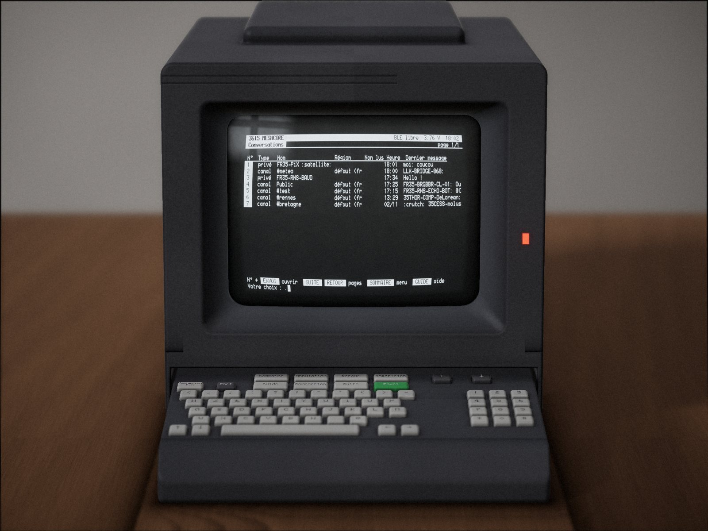

3615 MESHCORE
Un compagnon radio MeshCore dont l'écran et le clavier sont un vrai Minitel 2. Derrière le terminal, un Seeed XIAO nRF52840 et son module LoRa Wio-SX1262, branchés sur la prise péri-informatique par une interface à un transistor. On y lit le réseau maillé, on y écrit, on y surveille ses relais, depuis un terminal Télétel des années 80.

screen de l'appareil par le moteur de rendu photographique (c'est une image de synthèse, pas une photo).De quoi s'agit-il ?
Le XIAO fait tourner le micrologiciel compagnon BLE de MeshCore, avec une interface de plus : le Minitel. L'application du téléphone continue de fonctionner à côté, avec la même identité, les mêmes contacts et les mêmes canaux ; le Minitel ne vide ni ne modifie jamais sa file de messages en attente. Sur le Minitel, vous avez :
- les conversations sur les canaux, en message privé et dans les salons, avec un historique en mémoire flash, les accusés de réception, les répétitions entendues de vos messages, et le nombre de sauts et le SNR de chaque message reçu ;
- les contacts, les stations entendues, les stations proches avec distance et cap, des fiches avec réinitialisation du chemin, trace et partage ;
- l'administration des relais et des salons, jusqu'à une console à distance ;
- les régions de diffusion françaises nommées à la façon Gaulix, suggérées d'après votre département ;
- des graphiques radio en mosaïque Vidéotex, une page d'accueil animée, les émojis transcrits en ASCII, les accents tapés à la manière du Minitel ;
- une ligne de commande USB pour sauvegarder l'identité, rapatrier l'historique, relever l'écran et piloter toute l'interface par script.
Tout fonctionne dans les deux modes du Minitel : Vidéotex, 40 colonnes (titres en double taille, mosaïques G1) et Mixte, 80 colonnes (plus de place sur chaque ligne).
L'esprit du 3615
De 1982 à 2012, le Minitel a fait entrer les services en ligne dans les foyers français : on composait le 3615, on tapait le nom du service, et les pages arrivaient par la ligne téléphonique à 1200 bauds, en blanc sur noir. Ces pages avaient leur grammaire : une ligne de service en haut, des bandeaux de titre en vidéo inverse, un Sommaire accessible par sa propre touche, des choix tapés par leur numéro suivi de Envoi, et Suite, Retour, Guide, Répétition pour le reste.
3615 MESHCORE reprend cette grammaire. Plus de ligne téléphonique : le « service » est un réseau maillé LoRa, tenu par ses utilisateurs, sans opérateur ni abonnement, de proche en proche. Le Minitel redevient une fenêtre sur un réseau de gens, sauf que cette fois le réseau est dans les greniers des voisins.
Accès directs
- 1EcransToutes les pages, en texte ou en image.
- 2FonctionsCe que fait le service, rubrique par rubrique.
- 3MontageMatériel, interface, câblage, programmation, premier démarrage.
- 4RéférenceSommaire, touches, commandes USB, format des relevés, outils.
- 5DépannageRépertoire, pas de réponse, erreurs de parité, plantages.
- 6CréditsMeshCore, la police, les données, l'interface, les licences.
Sommaire
Le menu principal : nœud, batterie, Bluetooth, les huit rubriques, la dernière touche et l'état de la liaison.